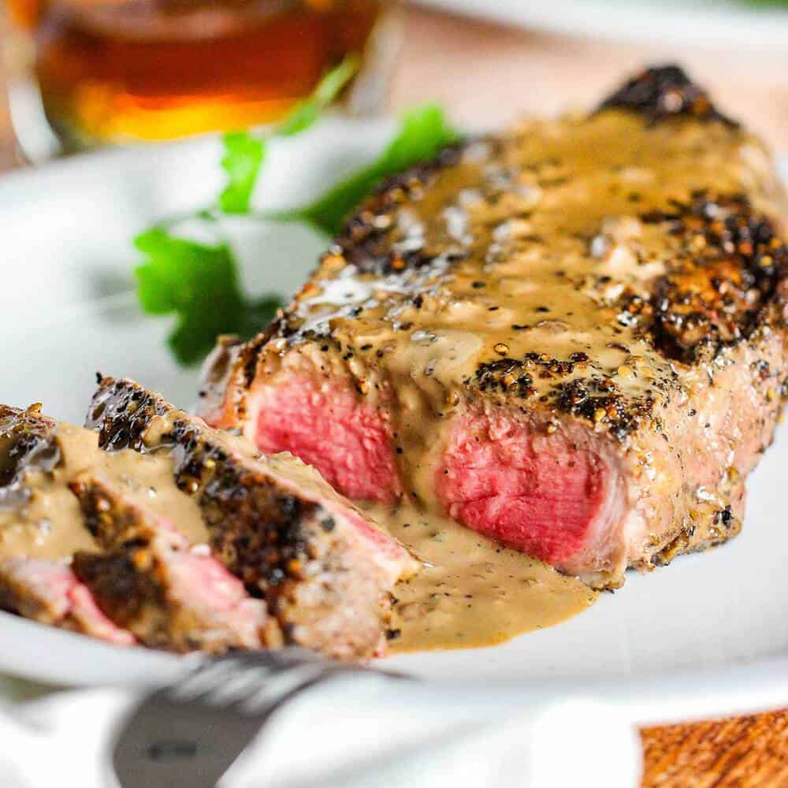

Steak Au Poivre

Description:
Steak Au Poivre is a classic dish from France. Crush some peppercorns as a crust for your steak, sear that sucker, and finish with a creamy pan sauce. Delicious.
Ingredients:
- 2 Steaks (6-8 ounces) such as Filet Mignon or Strip Steak
- Kosher Salt
- 1 ounce (30 g) whole black peppercorns, plus more as needed, divided
- 3 tablespoons (45 ml) vegetable oil
- 2 thyme sprigs
- 1 medium garlic clobe
- 1/2 large shallot (about 1 1/2 ounces; 40g), minced
- 2 tablespoons (30 ml) brandy or cognac
- 3/4 cup (174 ml) homemade chicken stock or store-bought low-sodium chicken broth
- 3/4 cup (175 ml) heavy cream or 6 tablespoons (90 ml) creme fraiche
- 1 teaspoon Dijon Mustard
Steps:
- Genereously season with Kosher Salt. Set on a wire-rack over a baking sheet and allow to air dry, uncovered, in the refrigerator for at least 30 minutes.
- While the salt penetrates the steak, crack peppercorns into rough halves and quarters. You can use a pepper mill on the coarsest setting, or use a meat pounder or skillet to crush them. Make sure to wrap the peppercorns in a clean towel first to contain them.
- Preheat oven to 375°F (190°C). Spread cracked peppercorns onto a plate or another shallow dish and press one side of each steak into the pepper, to encrust the steak. Set each steak aside, peppercorn side up. Reserve any remaining peppercorns.
- In a large skillet, heat oil over medium-high heat until shimmering. Add steaks, peppercorn side down, and cook until peppercorns are well toasted, about 3 minutes. Turn the steaks carefully, to not break the crust. Add butter, thyme, and garlic and cook, basting steaks with a spoon, until steaks are well seared on second side (about three minutes). Remove from heat.
- Transfer steaks to a rimmed baking sheet. Check internal temperature of the steaks; if they've reached 125°F (52°C), they're ready to be served medium-rare. If they haven't reached their final doneness, transfer to oven and continue cooking until internal temperature reaches 125°F. Once internal temperature is reached, allow steaks to rest for 5 minutes off heat.
- Pour off all but 1 tablespoon of fat from skillet and discard garlic and thyme. Add shallot and any reserved cracked peppercorns, return to medium heat, and cook, stirring, until shallot is tender, about 2 minutes.
- Add brandy or cognac. To prevent flare-ups, turn off the burner, add alcohol, then reignite the burner. Cook until raw alcohol smell has burned off and brandy has almost completely evaporated.
- Add chicken stock and bring to a simmer, stirring and scraping any fond from the bottom of the pan with a wooden utensil. Whisk in cream, then simmer, stirring often, until sauce has reduced enough to coat the back of a spoon. Whisk in mustard, and season with salt.
- Arrange steaks on plates and pour sauce over top. Serve with your favorite sides, and enjoy!
Home